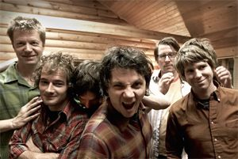

Love this photo from Michelle over at Consuming Louisville. Perhaps I’m just pining for baseball?
¨


 |
This is the blog of a one Ben Wilson, a Louisville, Kentucky native who enjoys baseball, beer, music, bikes, things that fly and good food. By day he pushes pixels and makes the Internet happen for a local advertising agency. His wife, Kelly is an Ironman, and his baby Amelia is the cutest thing ever. |
Love this photo from Michelle over at Consuming Louisville. Perhaps I’m just pining for baseball?
Get the Flash Player to see this player.
(20 minutes, 60 megs, so be patient!)
Shot on location during Kelly’s Ironman Louisville 2008 race!
Big thanks to Hunter, Jamie, Matt, Sara, Chris, Mom, Katy, Ron, Erica, Scotty, Jen, Kelly’s sister Cherie, Kelly’s dad Jerry, Tony, Megan, Tony, Keith, Beth, Team Hatton and everyone I forgot to mention who came down to IronMan Louisville on August 31st to cheer Kelly on. It was an amazing end to a year-long odyssey.
(Also much love to Doug for the HD camera, which I took great pains not to break during the day)
KELLY WILSON… YOU ARE AN IRONMAN!!!

| SWIM | BIKE | RUN | OVERALL | RANK | DIV.POS. |
| 1:11:19 | 7:03:56 | 6:02:36 | 14:36:47 | 1228 of 1975 | 52 of 86 |
Kelly and I would both like to extend a hearty “THANK YOU” to everyone who has supported her through this adventure. I know that many of you didn’t understand just WHAT she was getting herself into, much less understand WHY she was doing it. I hope that having followed her journey, you’ve been gained a little insight into what drives Kelly as well as some inspiration. While Kelly might now be an IRONMAN (which I no doubt will be oft reminded), she is just an average girl. Something in her “switched on” a few years back is all.
In short – I never want to hear “I could NEVER do that” out of any of you! I’m sure the Kelly of many years ago said the same thing… and look what happened to her! All of us are capable of great things.
While Kelly’s been running for the last few years, this Ironman thing is a whole other ball of wax. Did you notice all the of “Team <insert last name here>” shirts out on the course yesterday? That largely doesn’t happen in running. The IronMan demands the love and support of many for the Ironman hopeful, which you all gave without demand. We are forever in your debt for that. And the minute you start YOUR adventure, you know Kelly and I will be there!
Photos
Check out the 2008.08.31 – Kelly’s IronMan Louisville gallery for photos!
More photos @ Flickr tagged as “IronMan Louisville 2008″.
Video
Get the Flash Player to see this player.
2008 IronMan Louisville Highlight DVD given to Award Banquet attendees!
WLKY Channel 32 Live Report @ Ironman Louisville 2008
Race Reports
“Team Brazo” IronMan Louisville 2008 Race Report
Update: WLKY32′s John Boel did not fare well at IMLou 2008 – The ‘Ville Voice has the scoop: Boel’s Ironman Ends Badly. I saw him on Southern Parkway, probably around mile 8? or so – I knew he was shooting for a sub-12 hour time (he finished in 12:16 in 2007) and assumed he was in the home stretch – but that wasn’t the case at all. Looks like the bike hurt him much more than last year, and whereas he started the run last year doing something like 9 minute miles, he didn’t this year. View his 2008 results here. I know it’s got to be devastating for him and his family.
Further Boel Update: Boel describes his IronMan in “IronMan beats Boel” over at WLKY’s website. A lot of dehydration going on lately…
Great new Louisville ad made in town by a Doe-Anderson, Red7E and Guthrie Mays. Yes, I know, I work at Power Creative, but this ad is fantastic. It’s got some teeth (which are usually left on the cutting room floor). It’s part of a new branding initiative from Greater Louisville, Inc. Visit the website: ShareLouisville.org, or visit the original Louisville fan-club, Why Louisville. Why Louisville has a Beer Wolf. Share Louisville does not. Why 1 – Share 0!
Those of you who knew me when I was younger knew that I worked at the Dairy Queen in Middletown for most of my college years. Working at a restaurant offers interaction with a good number of people – but there are always a few that stand out, the regulars. One of my favorites was Carroll King. He was a man who did odd jobs for us on occasion or sometimes just sat in the back booth sipping coffee, always ready with a “hello” and a too-good-to-be true story. He was a bow-legged story teller, always dressed in black. He was a good man, but deeply flawed. Carroll died on January 4th, 2007 in a wooden shack in Middletown, Kentucky.
Carroll was a man about Middletown. He was known by all and was as close to a fixture as Middletown has ever had. Carroll was also homeless by choice and an chronic alcoholic. You could make reference to the loveable Otis the Drunk from TV’s Mayberry, and you’d be about half-right. Carroll, like Otis, was harmless and had a heart that, while weathered like the wrinkles on his face, was still good and true. But to romanticize him would be overlooking the crippling addiction that Carroll faced day-in and day-out. He was unapologetic in his poverty, and squandered much of what he received on alcohol. He seemed to accept his lot, and turned away offers for a place to stay. He was wild at heart. He won’t be missed by some, but he will be missed by many.
He was, in the end, a bridge to a lifestyle and a disease that no one would ever normally wish to associate with, but he managed to do so without force with so many people in Middletown that he had become part of Middletown.
Article: Homeless man had a place in friends’ hearts
Gallery: Memorial for Carroll King
Video: Carroll King’s Memorial Service
Obituary: Carroll M. King
Election day (November 7th) is five days away, and the House race for the 3rd District (Louisville) of Kentucky is still in contention, though it is leaning more to the left than it was even 2 weeks ago.
On Sunday, the Louisville Courier-Journal reversed their endorsement from two years ago (when they went for Northup) and endorsed John Yarmuth.
Today, SurveyUSA has released the results of a poll showing Yarmuth ahead of Northup by 8 points. Compared to the neck-and-neck poll results from 2 weeks ago, you’ve got to assume that Yarmuth is pulling ahead.
Why? Hard to say. Northup is still leading in the media-saturation column. Kelly and I have received at least one printed piece of mail from or supporting Northup every day for the last two weeks (sometimes more!) and her commercials are running at every blink. Could it be that her sour tone and base-thumping ways have turned away voters? Maybe. Yarmuth has been getting support late in the race in the way of money for ads, too.
I won’t be happy until there is at least a 10 point lead over Northup. Knowing how the Democrat base stays away from the polls and how reliable the right is in the same regard, we need a good head of steam to win it on Tuesday.

Jackson, Medina, Kelly and I went to see Wilco last night at the gloriously re-vamped Iroquois Amphitheatre here in Louisville. I had never seen Wilco live, though I really fell in love with them on our honeymoon back in 2002, shortly after their now-classic Yankee Hotel Foxtrot was released. I was extremely excited to see them, as was Kelly. Together, we are big fans.
The Iroquois Amphitheatre is located in the South End of Louisville. In a classic display of just how little Louisville hipsters have reason to visit the South End, Jackson and Medina met Kelly and I at one of the few reasons to venture south – the incredible edible Vietnam Kitchen – and it was packed to the rafters with hipsters! You’d be hard-pressed for a ‘Ville indie dude to give you the name of another restaurant in the ZIP code, so I guess it was only natural for the Wilco crowd to flashmob the joint.
We finished up there and headed down to the venue, which is just inside of Iroquois Park, the “Yellowstone of Louisville”. The amphitheatre was recently renovated, and I had never been inside of it before or after the renovation. It is just absolutely magnificent, and judging by the oohs-and-ahhs heard from the crowd as they entered, I’d assume that the local rock crowd will be clamoring for more shows to be held here. Call in your Vietnam Kitchen reservations now, scenesters!
The Early Day Miners opened for Wilco with no less than 5 guitarists and two drum kits and proceeded to blast out some AYWKUBTTOD / Explosions in the Sky-esque instrumental jams that came to an absolutely crushing end. Must be something about that Texas/Louisiana area that makes people want to elevate their rock to orchestral heights!
Wilco was excellent, and Jeff Tweedy was a jubilant and engaging frontman. At one point during “Hummingbird” he had panties thrown at him while he was hamming it up at the lip of the stage. Later, he would claim to wish that he was David Lee Roth, which was immediately followed by a qualification of “David Lee Roth from, like, 30 years ago”. Wilco’s music and lineup over the years has evolved in any number of different ways, but at the very core of it has always been Tweedy with his lyrical and rhythmic ventures, which have never strayed too far into the bizarre. Undoubtedly catchy hooks in his songs linger on my mind for days at a time, like a pop song, but with a lyrical depth that somehow strikes deeper.
The crowd was intense, with Wilco coming back for 2 encores. I overheard a photographer (whom I assume to be travelling with the band) remark that “these last two crowds were really great” (the other being a show at Michigan State) and I can’t argue with that. Wilco is one of few bands with a decade’s worth of work that is equally adored by fans – and judging by the wide, wide age range in the audience, they are at once retaining old fans and making new ones as they continue.
After the show wrapped, we walked back to the cars and I saw a sign that said “HONG KONG FAST FOOD”. Thanks to the curvature of the window on Jackson’s car, I managed to read that as “HONK HONK FAST POODLE” instead. That, Kelly decided, would be the name of her production company. Mine? Well, it would clearly be “Ferret with a Hat“.
One package is a charred oaken barren filled with corn squeezins’ and let sit for a decade. The other is a crude, yet effective attempt at medieval artillery fashioned out of bits and pieces from a local hardware store. Either is glorious!
It just so happens that I have photo galleriess of both such glories: 2006.05.04 – Taste of Oak and 2006.05.19 – Trebuchets.

The “Taste of Oak” thing was a fundraiser for the Easter Seals. Normally held during August, they moved the event to before the Derby (in fact near Oaks Day). The event involves a bourbon tasting and food from many different vendors, though the bourbon is the main attraction. Most of the major distilleries in Kentucky show up and are more than happy to give you all the bourbon you want in their custom glassware. Meanwhile, the Six Million Dollar Man and that Dead Guy From Lost Who Is Related to Tom Cruise wow the audience with their presence.

The trebuchet (treb-you-shay) thing started I-don’t-know-when, but suffice it to say any man with sufficient space at one point or another at least considers building a catapult. Last year, you may remember that some folks from our crue built potato guns for the Fourth of July. This year, we intend to keep up the sciency challenge with the building of catapults out of readily available materials. Rules and regulations are still in the works, but today (as witnessed by the photos and video) I put my small trebuchet through it’s paces with the help of Charlie Dillon. In the end we semi-reliably flung a golf ball about 60-75 feet. Glorious! This small model (named Cheap Plastic Artillery #1, aka CPA One) will be scaled up into a larger contraption that I have named THE POWER OF LOVE

Kelly, Chris Gerstle and I went down to Thunder Over Louisville last weekend to see the sights and check out some of the 800,000 other folks. I snapped some photos, and you can see them here: 2006.04.22 – Thunder Over Louisville.
Both Gary and Nick made it in town for Joe’s visitation and funeral. Gary flew in from Los Angeles, and Nick drove down from Chicago. Particulars of the situation aside, it was very good to see them both.
As I suffered through Joe’s “Celebration of Life” put on by his Friends of Hope friends, Hunter suggested I take off the next day (Friday) and kick it with him, Nick and Gary. Normally, it takes an act of Congress to get me to take a day off work, but there was compelling evidence in favor of me not giving a damn about work after the last few days, and the concentration of the old crüe would do me very fine.

We took the day and pounded the pavement from Longest to Trevilian on Bardstown Road and had a grand old time. I picked up a copy of “The Watchmen”, as well as issue #2 of “Y: The Last Man” at The Great Escape. Hunter and I bought a “Made in Louisville” onesie for the young Ella Pearsall and we spent a good amount of time in Book & Music Exchange. All in all, generally cutting up and trying to forget what we had seen and felt in the preceding 48 hours. It did the job, and did it well.

Can I tell you how great it is to be drunk around noontime when you should be at work? I can? Excellent. IT IS GREAT. We stopped at Cafe 360 for lunch and threw back some draught Smithwicks and tasty food. Hunter and Nick ate a tasty Indian dish called Chole Batura, and I had a leg o’ Tandoori chicken with tamarind sauce. The waiter told a so-so joke, and was honest with me about the tamarind soup. Good man.

Commisseration was completed as we sat out in the open at the Highland Taproom in the brisk air and warm sunlight. Bourbon polished a rosy patina on our cheeks. Ice Cube never said it better: “It was a good day.”
Later in the evening, we had a get-together at Holly’s (ne’ Chris’) house and played all sorts of bad music (some from cassettes), as well as some bizarro infite-degrees-of-Kevin-Bacon-game. Beer was had.
Check ou the 2006.02.03 – Brothers in Arms gallery for photos, like this one below: